Эти фотографии были сделаны и любезно предоставлены
профессиональным фотографом Егором
Егоровым. Без него уж не знаю, что бы мы делали ;) Спасибо, Егор, спасибо
за действительно классную работу! Фотографии (полные их версии, которые
доступны по ссылкам) очень точно передают настроение и ощущение Места...
Фотографии были сняты на пленку Kodak Ektar 25 с
6 до 10 часов теплым апрельским утром.
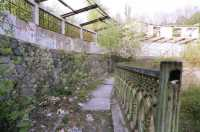 |
Верхняя стена театра, вид с южного входа. |
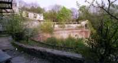 |
Верхняя стена сверху, панорамный снимок. |
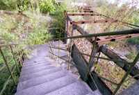 |
Подъем наверх, к пристройке над верхней стеной. |
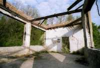 |
Пристройка над верхней стеной. Отсюда открывается самый красивый вид. А еще тут можно наблюдать весьма интересные картинки скажем так, нефизической природы... |
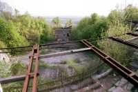 |
Вот тот самый вид... Точнее, только его часть. Ночью или в сумерках, когда горят огни города, тут можно стоять часами, любуясь красотой открывающегося пейзажа. и одновременно ловя интересные эффекты. |
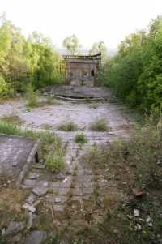 |
Зрительный зал и сцена. Панорамная съемка. |
| Еще один кадр, с чуть измененными параметраи съемки. | |
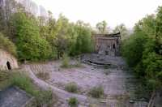 |
Вид на ресторан "Куренi" (за деревьями). В тех деревьях мне как-то довелось наблюдать призрак Хозяина, который не только "позировал", но и отвечал на задаваемые вопросы. |
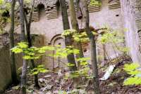 |
Северная опорная стена. На ней видны следы исследователей, которые пытались пробиться на легендарный второй этаж стены... Им это не удалось, хотя отсутствие второго этажа тоже не удалось доказать или опровергнуть. |
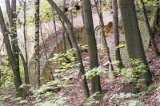 |
Еще один ракурс подпорной стены. |
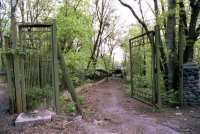 |
Северные ворота Театра. Вход. Сейчас левая часть этих ворот (та, что тут наклонена и изображена в профиль) уже оторвалась и лежит рядом. Классно смотрелась надпись на правой части ворот: "Desroyka" ;) |
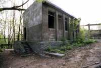 |
А вот и результаты Дестройки... Все обветшало и пришло в упадок... Вряд-ли когда-то это будет восстановлено. Да и какой бизнесмен согласиться это делать, когда все предыдущие попытки заканчивались столкновением с Неведомым и крахом. Хотя кроме этого еще имеется информация, что некоторые люди, которые встретятся в разрешительной системе опрометчивому бизнесмену, знают ВСЮ историю целиком и знают, что тут происходило и происходит... Эти люди накладывают свое вето на такие проэкты, часто не объясняя причин. |
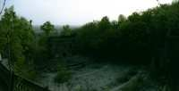 |
Очень интересный кадр. Вроде как он "не получился", так как снимали против солнца (южная сторона стены), но чего он нам стоил! В этой точке камера, до того выдержавшая 13 лет активной эксплуатации, радиацию Чернобыля и многое еще, просто отказывалась работать... |
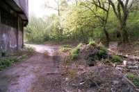 |
Это дорога за верхней стеной. Межлу кучами мусора есть недавно открытый и расчищеный вход в старую ливневку, которая ведет от коммендатуры (выше) через подвал под сценой в нижнюю стену и дальше в Днепр через дренажно-штоленную систему... Сзади виднеется кирпичная постройка одного из выходов хода имени Раттлера Раттлер совершил просто-таки подвиг, когда залез по отвесным трубам из галереи верхней стены и вылез тут... Правда, потом ему пришлось отмазываться от нагрянувших мусоров, но это уже другая история ;) |
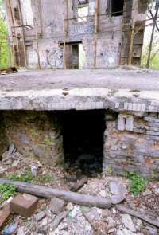 |
Когда-то это была оркестровая яма. Именно та, в которой загадочно погибали люди... Виден вход в подвал под сценой, одно из наиактивнейших мест театра. |
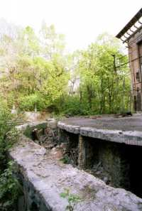 |
Арекстровая яма в профиль. |
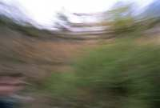 |
Смазаный снимочек... Но приятный ;) |
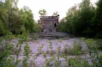 |
Вид с будки киномеханика к сцене. Один из найкрасивейших кадров! |
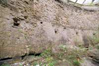 |
Верхняя стена. Бойницы ведут в галерею Ну и кто как думает, возможен ли здесь второй этаж? |
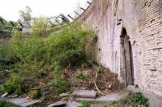 |
Южный вход в галерею верхней стены. |
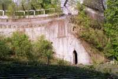 |
Он же, издали. |
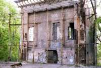 |
Постройка на сцене, очередной кадр. |
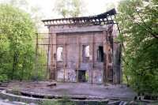 |
И еще... |
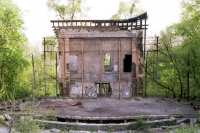 |
...и еще ;) |
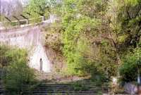 |
Вид со сцены, северный вход. |
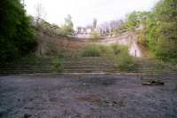 |
Уникальный кадр. Верхняя стена во всей своей красе... |
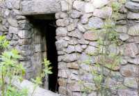 |
Вход в будку киномеханика. Кстати, отсюда идет подземный ход через подвал под сценой (недавно открыли) и до выхода в колодце около нижней стены. |
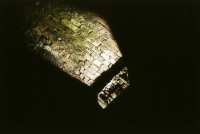 |
Красивейший кадр! Так свет пробивается через бойницы... Холл галереи верхней стены. |
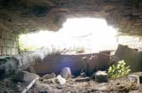 |
Вот и сама бойница, более известная как "аварийный выход". Вид изнутри. |
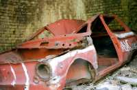 |
Нечего народу делать было.... Хм. А этот лимузин классно смотрится с мусорской мигалкой на крыше, уже пробывали. ;) |
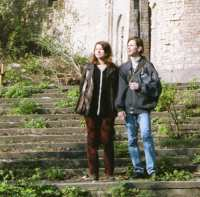 |
Редчайший кадр. Автор сайта сфотографировался на память с девушкой, случайно забредшей (в полседьмого утра!!! 8-( ) ) в Театр... |
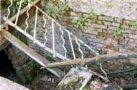 |
Один из входов в подвал. Романтично, не правда ли? |
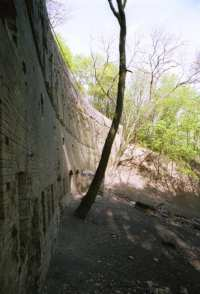 |
Нижняя стена. Тут тренируются альпинисты. Жутковато смотреть, как по отвесной стене, цепляясь за едва видимые впадинки, медленно карапкается человек... Нижняя стена тоже имеет свою галерею (ее можно проследить по окнам-бойницам). |
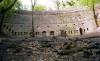 |
Панорамный вид нижней стены. |
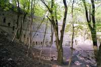 |
Вид сбоку. |
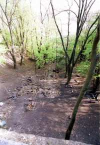 |
А это вид с нижней стены вниз. Высоко и жутковато. |
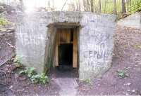 |
Вход в дренажно-штоленную систему. Их огромное количество разбросано по склонам, а протяженность наверное достигает сотни километров. Диггеры (и я в их числе) устраивают туда переодические вылазки (точнее, влазки ;) ). Отчеты регулярно публикуются здесь |
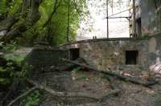 |
Обратная сторона сцены. |